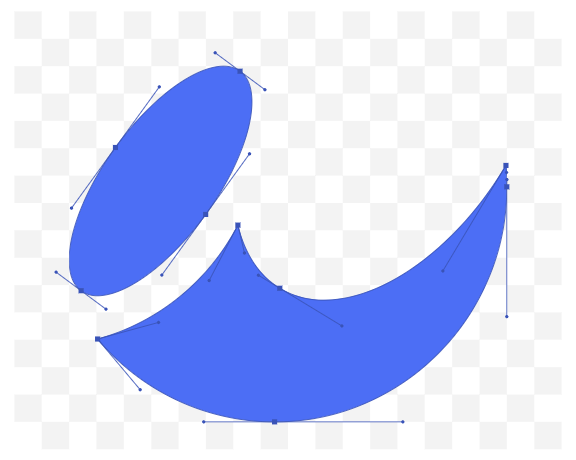

Early life
How he got into golf
Professional Carrier
Career Achievements
Personal Life
See Also
Early Life
Eldrick Tont "Tiger" Woods (born December 30, 1975) is an American professional golfer. He is tied for first in PGA Tour wins and ranks second in men's major championships and also holds numerous golf records.[5] Woods is widely regarded as one of the greatest golfers, and one of the most famous athletes of all time. He will be inducted into the World Golf Hall of Fame in 2021.[6]
How he got into golf
Following an outstanding junior, college, and amateur golf career, Woods turned professional in 1996 at the age of 20. By the end of April 1997, he had won three PGA Tour events in addition to his first major, the 1997 Masters, which he won by 12 strokes in a record-breaking performance.
Professional Carrier
He reached number one in the world rankings for the first time in June 1997, less than a year after turning pro. Throughout the first decade of the 21st century, Woods was the dominant force in golf. He was the top-ranked golfer in the world from August 1999 to September 2004 (264 weeks) and again from June 2005 to October 2010 (281 weeks). During this time, he won 13 of golf's major championships.
Career Achievements
The next decade of Woods' career was marked by comebacks from personal problems and injuries. He took a self-imposed hiatus from professional golf from December 2009 to early April 2010 in an attempt to resolve marital issues with his then-wife, Elin. Extramarital affairs with Woods had been alleged by several women, and the couple eventually divorced.[7] Woods fell to number 58 in the world rankings in November 2011 before ascending again to the No.1 ranking between March 2013 and May 2014.[8][9] However, injuries led him to undergo four back surgeries between 2014 and 2017.[10] Woods competed in only one tournament between August 2015 and January 2018, and he dropped off the list of the world's top 1,000 golfers.
Personal Life
[11][12] On his return to regular competition, Woods made steady progress to the top of the game, winning his first tournament in five years at the Tour Championship in September 2018 and his first major in 11 years at the 2019 Masters.
See Also
Woods has held numerous golf records. He has been the number one player in the world for the most consecutive weeks and for the greatest total number of weeks of any golfer in history. He has been awarded PGA Player of the Year a record 11 times[13] and has won the Byron Nelson Award for lowest adjusted scoring average a record eight times. Woods has the record of leading the money list in ten different seasons. He has won 15 professional major golf championships (trailing only Jack Nicklaus, who leads with 18) and 82 PGA Tour events (tied for first all time with Sam Snead).[14] Woods leads all active golfers in career major wins and career PGA Tour wins. He is the youngest player to achieve the career Grand Slam, and the second golfer (after Nicklaus) to have achieved a career Grand Slam three times. Woods has won 18 World Golf Championships. He was also part of the American winning team for the 1999 Ryder Cup. In May 2019, Woods was awarded the Presidential Medal of Freedom, the fourth golfer to receive the honor.[15]
If you like this page also see my other pages Practise.html 